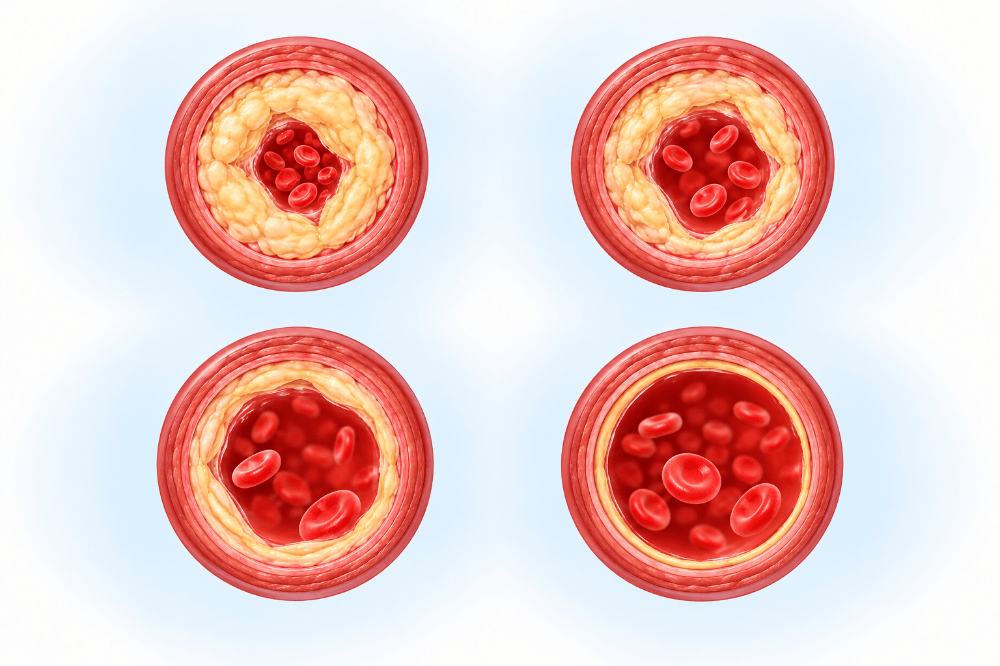

목표는 위험도에 따라 다릅니다
목표는 위험도에 따라 다릅니다
| 나의 상황 | LDL 목표 |
|---|---|
| 저위험 (위험인자 0~1개) | 160 mg/dL 미만 |
| 위험인자 2개 이상 | 130 mg/dL 미만 |
| 당뇨 (10년 미만 · 위험인자·합병증 없음) | 100 mg/dL 미만 |
| 당뇨 (10년 이상, 또는 위험인자·합병증 중 하나라도) | 70 mg/dL 미만 |
| 경동맥 플라크* · 뇌졸중(뇌경색) 과거력* · 일과성 허혈발작(TIA)* | 70 mg/dL 미만 |
| 스텐트 · 심근경색 (+ 치료 전보다 50% 이상 감소) | 55 mg/dL 미만 |
검진 '정상' ≠ 내 목표 · NOTE
검진표의 '정상'으로 보이는 수치도 내 치료 목표보다는 높을 수 있습니다. 위험이 높을수록 목표를 더 낮게 잡습니다.
* 경동맥 플라크는 좁아진 정도와 전체 위험도를, 뇌경색·TIA는 원인(동맥경화 동반 여부)을 확인해 목표를 정합니다. 스텐트·심근경색은 55 미만과 함께 치료 전보다 LDL을 50% 이상 낮추는 것을 목표로 하며, 해당 고위험군에서도 50% 이상 감소를 함께 봅니다.
※ 2026 지침 선택 목표: 재발 위험이 높은 뇌경색, 합병증이 있거나 위험인자가 3개 이상인 당뇨는 55 미만까지 낮추기도 합니다.
 LDL은 간의 콜레스테롤 생성·처리 능력(유전적 요인)이 크게 좌우합니다
LDL은 간의 콜레스테롤 생성·처리 능력(유전적 요인)이 크게 좌우합니다
| LDL | 중성지방 | |
|---|---|---|
| 주로 정하는 것 | 음식보다 간의 생성·처리 능력 | 식사 · 술 · 체중 |
| 식사요법 | 모두에게 기본 치료 | 생활습관에 잘 반응합니다 |
식사요법(포화지방 줄이기)은 모두에게 기본 치료이고 약과 함께 계속합니다. 다만 LDL은 간의 생성·처리 능력(유전 영향)이 커서 식사만으로는 목표에 못 미치는 경우가 많습니다 — 이때 약이 필요합니다.
 곡선 아래 넓이 = LDL 누적 노출(얼마나 높았는지 × 얼마나 오래였는지)
곡선 아래 넓이 = LDL 누적 노출(얼마나 높았는지 × 얼마나 오래였는지)

1234약 시작빗금 = ④보다 더 쌓인 양막대 = 색칠된 넓이 전체세로 LDL · 가로 나이
넓이가 클수록 혈관 벽 안쪽에 찌꺼기(죽상경화반, plaque)가 더 쌓여 피가 지나는 길이 좁아지고, 심근경색·뇌경색 위험이 커집니다.
혈관 단면 번호 = 위 그래프 번호(① 가장 많이 → ④ 가장 적게). ②·③ 순서는 시작 시기·끊은 기간에 따라 바뀔 수 있습니다. 이해를 돕는 그림이며 실제 수치가 아닙니다.
 커피와 식단도 LDL을 움직입니다
커피와 식단도 LDL을 움직입니다
아메리카노 · 라떼
에스프레소처럼 종이필터를 거치지 않은 커피에는 LDL을 올리는 기름 성분(카페스톨)이 남아 있습니다.
믹스커피 · 종이필터 드립
LDL 면에서는 괜찮습니다.
저탄고지
LDL에는 가장 나쁜 식단입니다.
 흔한 오해 vs 사실
흔한 오해 vs 사실
| 자주 듣는 오해 · MYTH | 바로잡기 · FACT |
|---|---|
| "콜레스테롤은 몸에 꼭 필요하니 너무 낮추면 안 된다" | 몸에 필요한 콜레스테롤은 세포가 스스로 만듭니다. |
| "러닝하면 고기 먹어도 된다" | 운동으로 LDL은 크게 안 내려갑니다. 포화지방은 여전히 LDL을 올립니다. |
| "오메가3로 LDL을 잡는다" | 오메가3는 중성지방을 일부 낮추고 항염증 효과가 있지만, LDL을 낮추지는 못합니다. |